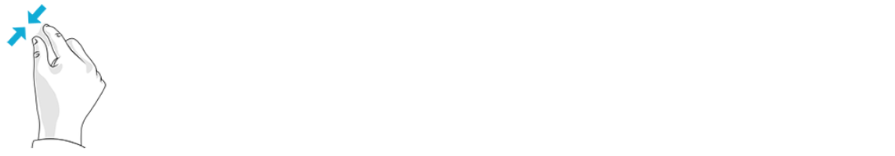
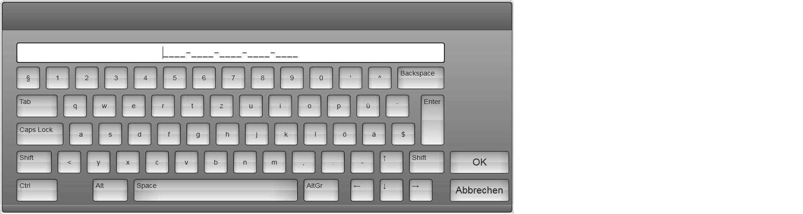

Die Oberfläche des Touchscreens unterstützt die folgenden Windows Touch-Gesten.
| So wird’s gemacht | Anwendung |
|---|---|
|
Element einmal kurz antippen. |
Das angetippte Element wird geöffnet, ausgewählt oder aktiviert. Dieser Vorgang gleicht dem Mausklick. |
| Element zweimal kurz antippen. |
Einen vergrösserten oder verkleinerten Schneidplan in der Ansicht Job - Produzieren wieder in das Ansichtsfenster einpassen. Dieser Vorgang gleicht dem Maus-Doppelklick. |

| So wird’s gemacht | Anwendung |
|---|---|
| Einen Finger über einen Bildschirmbereich ziehen (nach links, rechts, oben oder unten) |
Dieser Vorgang gleicht dem Scrollen mit dem Mausrad. |

| So wird’s gemacht | Anwendung |
|---|---|
| Bildschirm oder Element mit mindestens zwei Fingern berühren und die Finger aufeinander zu oder voneinander weg bewegen. |
|

| So wird’s gemacht | Anwendung |
|---|---|
| Mit dem Daumen das Teil wählen und mit dem Zeigefinger nach links oder rechts drehen |
|

Die virtuelle Tastatur wird automatisch eingeblendet, sobald Sie in ein Eingabefeld tippen. Die Eingabe wird durch das Betätigen der OK Taste gespeichert.